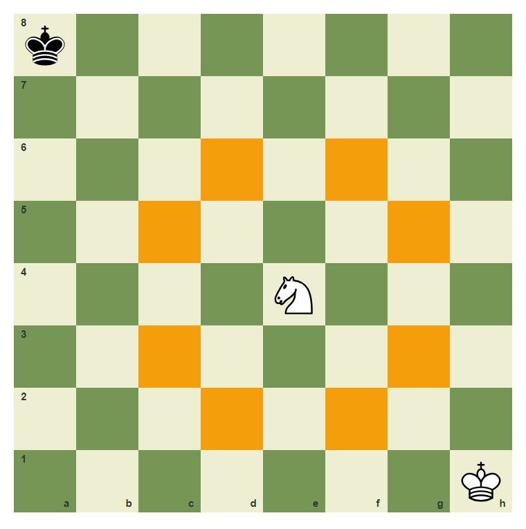
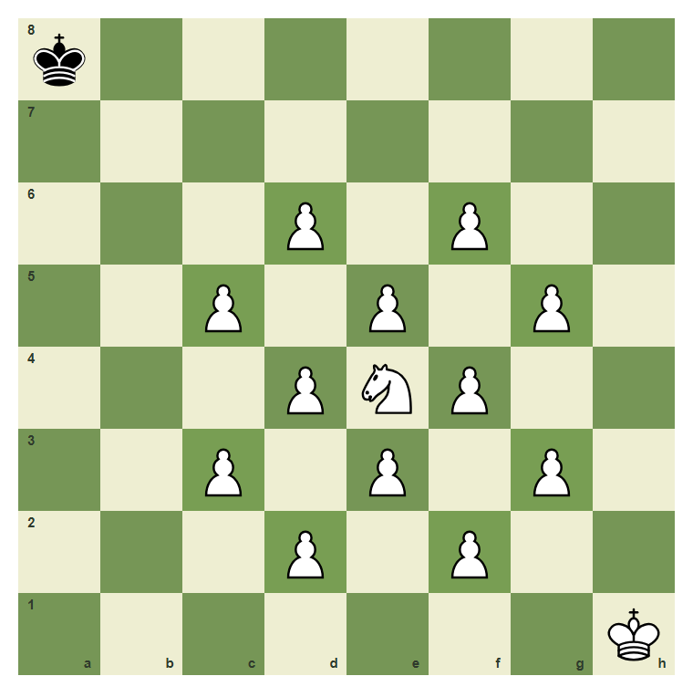
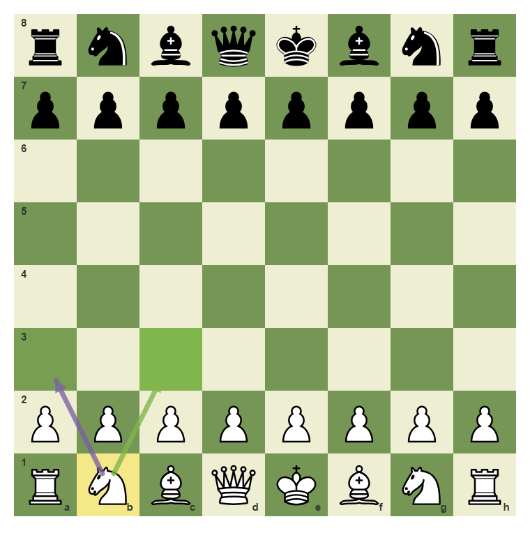
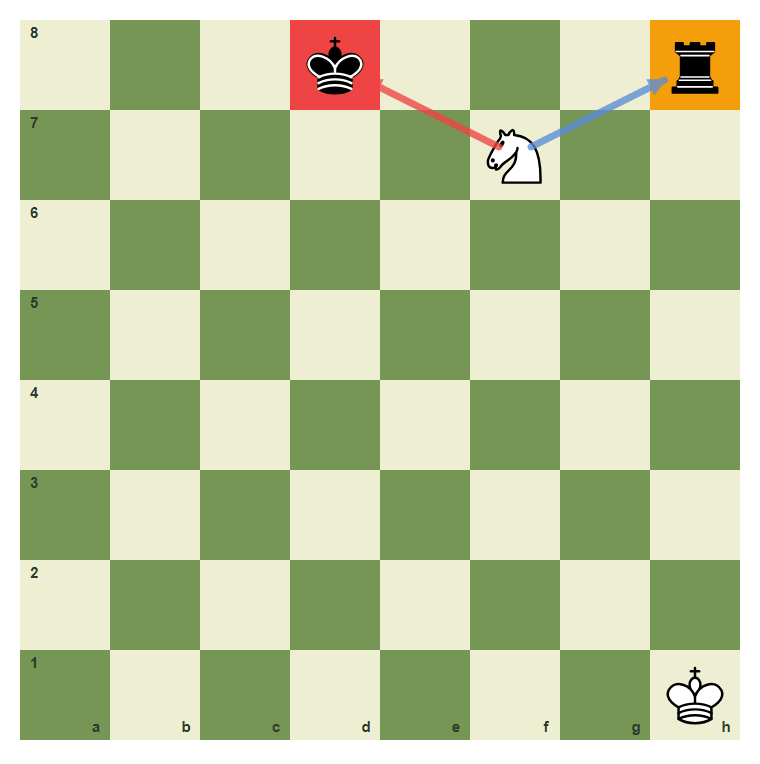
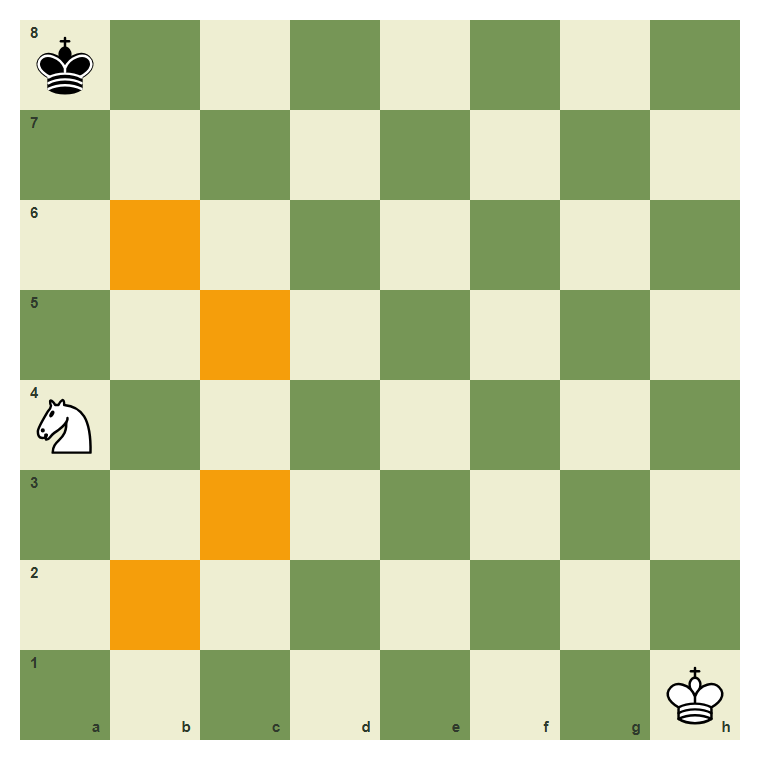
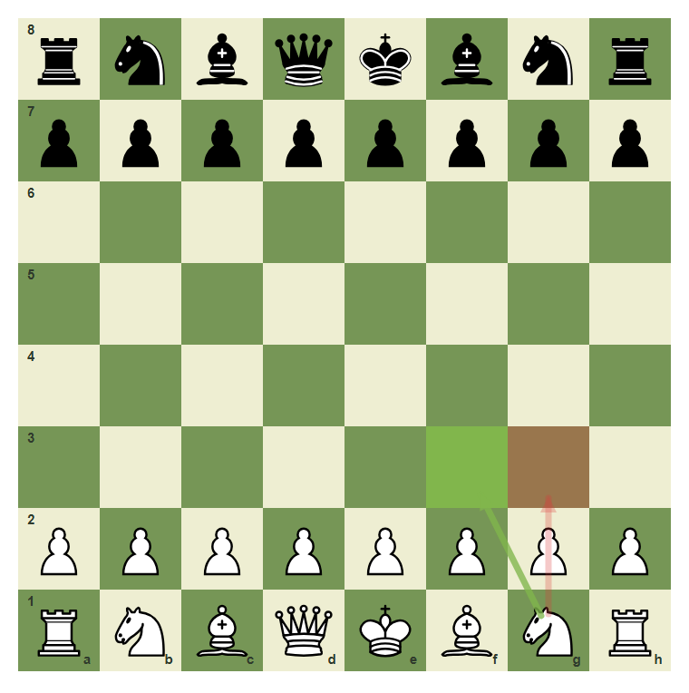

The Knight And Jumps
The knight is the only piece that jumps over blockers.
- Move a knight in an L shape.
- List the knight moves from a center square.
- Understand that knights jump over pieces but cannot land on friendly pieces.
- Recognize that edge knights have fewer moves.
The L Shape
The knight moves in an L shape: two squares in one direction and one square sideways. It is the only piece that can jump over pieces.
Knight moves from e4

A knight on e4 has up to eight landing squares.
The knight jumps over blockers

Even when surrounded, the knight on e4 can jump to its L-shaped landing squares.
Knights From The Starting Position
From the starting position, the knight is the first piece that can move without a pawn moving first. The knight jumps over the pawns.
The b1 knight can jump

The knight on b1 can jump to a3 or c3 at the start.
A knight fork pattern

A knight on f7 attacks the king on d8 and the rook on h8 at the same time.
Edge knights have fewer moves

A knight on a4 has only four legal landing squares instead of eight.
Develop the knight to f3
Move the knight from g1 to f3.
Common Mistake
Common mistake: sliding the knight
A knight on g1 cannot slide to g3. Knights do not move straight; they move in an L shape.

g1 to f3 is a knight move. g1 to g3 is not.
Chapter Checkpoint
What shape is a knight move?
A knight moves:
Can knights jump?
A knight can jump over pieces:
Where can the g1 knight move at the start?
From the starting position, the knight on g1 can move to: